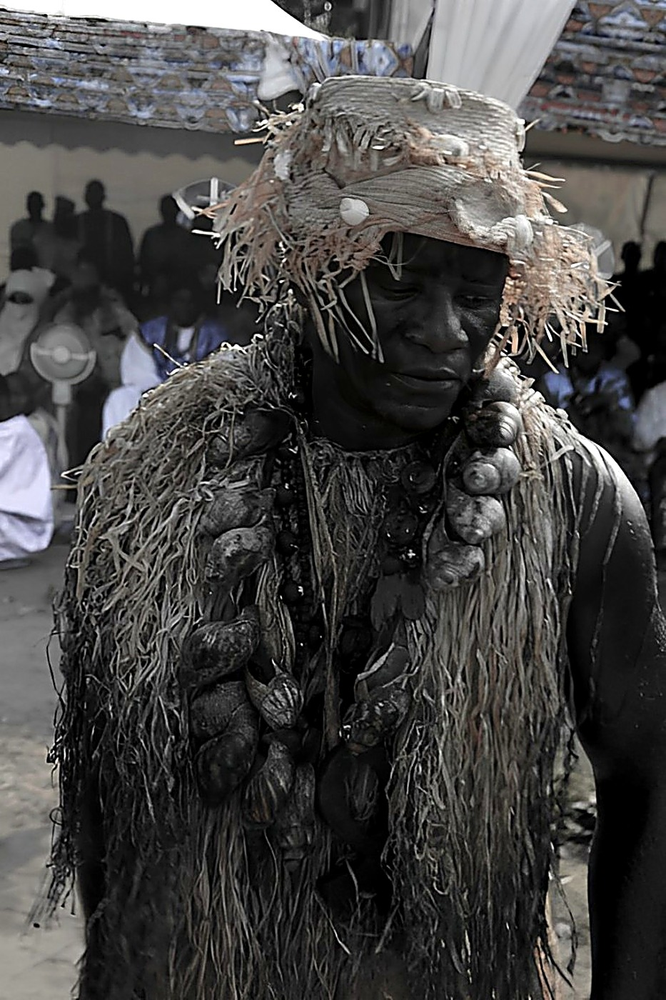

Origins of the Canton
The origin of the Déido people remains surrounded by rich, sometimes contradictory oral traditions. The most widespread account places their eponymous ancestor, Ebele, as a man of Abo origin who left his native village in search of salt and gradually made his way to the coast, leaving groups behind at Loum, Penja, Njombé and Mbanga. Once among the Duala, Ebele married Jinge, then took further wives split between two households — Jinge's and Moula's. From their descendants emerged the five great lineages that make up today's canton: Bonajinge, Bonamoudourou, Bonateki, Bonatene and Bonantone.
The Déido people are marked by a distinctive cultural trait: among them, all social relationships are first and foremost kinship relationships. Known for being unresentful yet proud, thrifty and devoted to knowledge, they cultivate a spirit of community solidarity embodied in the famous "Deido Match" — a collective effort to support any member of the community in difficulty. The canton, historically under and later freed from Akwa's tutelage around the reign of Epeye Ekuala Eyum, maintains a deep bond with the Wouri River bordering its territory. Tradition places their settlement in the current location around 1798.
🌊 People of the Water
The Superior Chief
The Ngondo in Pictures
